Et ben... Tout ce qui est inclassable !
Cette
rubrique va regrouper toutes les photos qu'on a pas plus mettre dans les autres
catégories. Vous comprenez bien qu'on peut pas faire une catégorie
par photo, donc on a tout mis en vrac dans autres. Et si ça vous plaît
pas, c'est pareil ! 
| 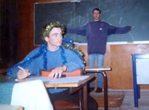 | Cette photo est une démonstration de l'intelligence des Sup3. Simon se fait pschitter sur le tableau et Krophète décore la salle. Enfin les guirlandes qui sont sur lui décorent la salle... Allez, pleure pas, t'es beau quand même Krophète ! Qui a dit non ?!? |
| Là, tout ce petit monde révise la belote. De gauche à droite puis en revenant vers le premier plan on a : Mickaël, Damien, Mia, Patou, Benoît, Anthony (de dos), Thomas (dont on voit que les cheveux) et au fond de la photo on discerne une personne qui a tenu à préserver son anonymat. On respectera donc son choix. | 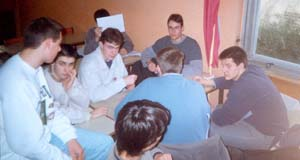 |
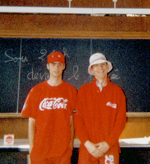 |
PBO et Thibaut dans leur belle tenue Coca-Cola. C'était le dernier jour de l'année... Quelques heures avant le début d'un très grand week end. |
| Dublack,
Elise, Alban, PTSK et C6Leuh ! Dans la cours du lycée, tout simplement
! | 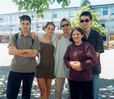 |
| 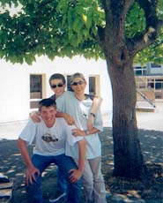 |
Anthony a enfin trouvé plus grand que lui !! A savoir
PTSK et Alban. Non il n'y a pas de trucage ! |
|
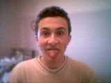 | |
| Mercredi 4 avril 2000. Pedro disjoncte. Et il le montre. Il est chez lui, tout seul, devant sa webcam. Je crois que c'est pas la peine d'en dire plus... Beaucoup ne le savent pas mais cet homme est quelqu'un d'important : il est Le Roi de l'ancien forum Sup3, celui sur caramail qui s'appelait "Lasup3àpoil", qui existait avant la création du forum de ce site. Et il y a eu vraiment une élection, ça ne s'est pas fait au hasard, loin de là même. Présentation des listes, campagnes électorales au cours desquelles des grands affrontements ont eu lieu (on se rappelle de nombreuses photos compromettantes que chaque liste adressait à la liste adverse), et bien sûr élections. Et c'est Pedro qui a gagné. Je tiens à préciser quand même que ces photos n'ont rien à voir avec les élections, c'est pas ça qui lui a permis de gagner. Le but n'était pas de se mettre à poil comme le nom du forum ne l'indique pas. Les filles, admirez Le Roi du Forum Sup3 de caramail. | |
| La
fête de la musique. C'est le seul soir dans l'année ou il y a un
peu de monde dans les rues d'Orléans. En plus c'était la fin de
l'année, on s'est bien défoulé ce soir là. Cette photo
a été prise pendant que la Sup3 mettait l'ambiance à un concert,
non loin de la cathédrale. On entendait que nous ! |
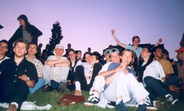 |
| 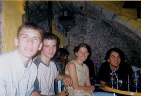 |
Alors là il devait être aux alentours d'une ou
deux heures du matin. Pour rentrer dans ce bar on leur avait dit qu'on était
seulement une dizaine de personnes alors qu'on était bien une vingtaine.
Mais bon, c'est passé. |
| Une
petite photo de groupe à la sortie du Havana. Des Sup3 mais aussi des 3/2,
littéraire, HEC, fac etc... Un peu de tout quoi ! |
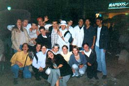 |
| 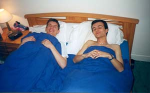 |
Ce jour là, pendant la fête de la musique toujours, tous les internes avaient décidé de ne pas rentrer à l'internat à minuit et demi pour passer toute la nuit dehors et s'amuser. Le seul problème c'est que tout s'arrête à une heure du matin !! Résultat : on avait plus grand chose à faire. On a bien réussi à s'occuper encore pendant quelques heures mais tout a une limite. Et c'est pour ça qu'on peut voir Morpheus dans le lit de Thibaut, dans son appart. Thibaut est tout content et on peut pas dire que Morpheus ait l'air de regretter non plus ! On ne le voit pas sur cette photo, mais il faut souligner que Krophète est couché par terre, à la gauche de Morpheus. Et oui, c'est lui qui a gagné le droit d'éviter Thibaut... |
|
Cette photo est tout un symbole. Elle représente la réussite d'une mission hautement dangereuse qu'ont entrepris quelques valeureux Sup3. C'était la dernière nuit de l'année. On avait déjà plus cours le lendemain, mais la plupart des internes étaient restés pour une dernière soirée de folie. Il avait été décidé de dormir dans la cour du lycée, sur le Dima (le matelas pour le saut en hauteur près du gymnase). Les Sup3 les plus courageux ont alors décidé de faire une petite visite du lycée voisin : Franklin. Ainsi cette photo a été prise dans Franklin, devant une statue de ce lycée. On peut reconnaître PTSK, Pépé, Patou et Mia qui est accroupi. Bravo les gars ! Euh... Ca va PTSK ? |
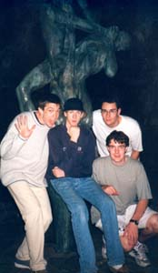 |
| 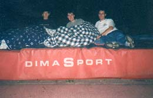 |
Pas trop froid ? En tout cas combien de personnes peuvent se
vanter d'avoir dormi dans la cour du lycée ? |
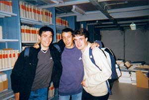 | 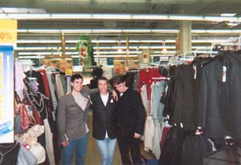 |
| Dublack, Simon et Mia partent en voyage. Sur la première photo on peut les voir lors de la visite de la célèbre B.U. (Bibliothèque universitaire). A droite, dans carrefour en train d'essayer des costards. Ne me demandez pas ce qui leur est passé par la tête. Je suis bien incapable d'y répondre ! | |
| Nos 4 compères réunis dans l'appart de Simon. | 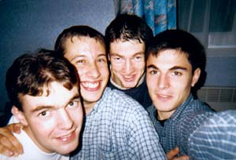 |
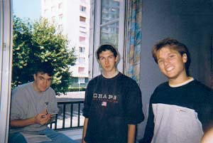 | Mia, Pépé et Pascal toujours chez Simon. |
|
L'équipe de foot des HX3 208! La photo a été prise le jour de l'inoubliable branlée infligée aux nouveaux sup3. Vous ne vous rappelez pas ? Allez, un rappel du score pour les étourdis : HX3 208 vs hx3 209 : 19 buts à 4 No comment. | 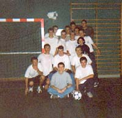 N.B. : les webmasters déclinent toute responsabilité pour la mauvaise qualité de la photo. Tu as la conscience tranquille Simon ? |